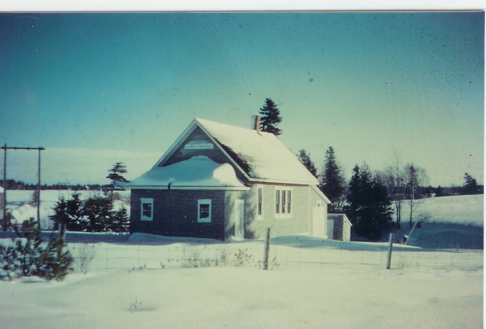

The Family Chronicle
No. 92 February 22, 2005
____________________________________________________________________

The following is a continuation of obituaries of my Uncles and Aunts
Black River (Special) – The death of John W. MacNaughton in his 86th year removed from the Miramichi scene a widely known and highly respected farmer and lumberman who, during his lifetime, took an active interest in affairs of his community.
For many years he worked with the A. and R. Loggie Company of Loggieville. He was a lumberman, surveyor and cruiser of timber lands. His work carried him far afield and he won many friends. Until recent years he conducted his own mill and lumber business in Black River.
An active Liberal, he was party chairman for his district for a number of years. He was a member of the county council and represented his native parish of Glenelg for 37 years and during one period was county warden. He was also a former member of the board of Miramichi Hospital, Newcastle.
An able supporter of St. Stephen’s United Church,
he had been an elder of the church since 1926. In 1907 he was chairman of the building committee for the present church and until recently was manager of the cemetery improvement committee.
Mr. MacNaughton was a member of Miramichi Lodge No. 18 F. and A.M., True Blue LOL No. 90, Unity Lodge No 18 IOOF and the Highland Society of N. B. at Miramichi.
He served as captain in the 73rd Northumberland Regiment for a number of years prior to the First World War.
Mr. MacNaughton was one of a family of 10 sons and three daughters of the late John and Margaret Ward MacNaughton, who lived in a hewed log dwelling on the present homestead, one of the first settled in Black River.
His wife, Elspeth, daughter of Grace and Jubal Watling, predeceased him in 1943.
Surviving are eight daughters and three sons, 22 grandchildren, six great grandchildren and three brothers
.
FUNERAL SERVICE HELD AT CHATHAM
Family and friends of Mrs. John W MacNaughton were shocked when her death occurred suddenly on Friday following a brief illness. She was formerly Miss Elspeth J. Watling, daughter of the late Jubal and Grace Watling and was widely known throughout the community as a woman of kindly character held in high regard. Always interested in the church work of St. Stephens United Church she had a life membership in the Women's Missionary Society and was an active member in many organizations.
She is survived by her husband, John, W. MacNaughton; three sons, John, Gardiner, Me; Gordon, Dalhousie, and Flt. Sgt. Malcolm, RCAF, Ottawa; eight daughters, Mrs. Archibald MacNaughton, Black River Bridge; Mrs. James Edge, Mrs. Harold MacKay and Miss Luella, all of Cambridge, Mass; Mrs. Clifford MacNaughton Gardiner, Me; Mrs. A W Lewis, Chatham; Mrs. Elliot Cail, Pine Ridge, NB; and Mrs. Perley McKnight, New Jersey, NB; three sisters, Mrs. John K. MacKenzie, Loggieville; Mrs. E. A Glendenning and Mrs. John R Godfrey, Black River Bridge; four brothers, James A Watling, Black River Bridge; Ernest D Watling, Loggieville; John M Watling, Boston, and J. George Watling, New Hampshire.
The funeral was held this afternoon with service at the house conducted by Rev. Peter Jackson and at St. Stephen's Church. Interment was in the adjacent cemetery. Numerous floral tributes were received.
Donald Edge and I have been in touch about the Miramichi Fire of 1825. The fire was preceded by very hot and dry weather. The fire appears to have started north west of Newcastle and on October 7 swept eastward, especially on the north side of the river, practically destroying all of Newcastle and Gretna Green (Douglastown) . An estimated 160 to 200 people lost their lives.
The History of Chatham by William Godfrey mentions the devastation on the north side of the Miramichi but Chatham was quite unscathed. Other articles support this view.
Did the fire include Black River? A paper by Lillis R. Zimmer refers to “thirteen families who live in back of Gretna Green, and sixty more at Black River who were killed by the fire.” Local lore does not support this view. Had their been such a loss of life, it seems to me that we would have heard the story from our parents and grandparents. Such an event would have been included by A. W. MacDougall in his history of Black River and, it is likely, that some of the Black River folk would have been buried in the “Black River” cemetery at Gunn’s Point since, by then, other settlers were buried there even though it was not technically a recognized burying ground. Readers wishing more information may be interested in the following site or they may want to simply search for “Miramichi fire”.
Great Fire of Miramichi of 1825
Recently I talked with Harold MacLean, who has a good memory and lives in the area. He told me the following story, which was told to him by his father.
Harold’s great grandmother was a MacNaughton, Catherine, I believe, who lived west of Route 11. As a young girl, she was visiting with some relatives at the old MacNaughton home, John W’s father. The old home was close to the river below the John W. MacNaughton residence. Harold’s home was standing at the time of the fire and was owned by a Thomas Murtha who happened to be away at the time of the fire. Catherine and some of the MacNaughtons walked up to the Murtha home to see if everything was all right. It was.
My conclusion, based neither on science nor research, is that there may have been some fire damage in the Black River area but no loss of life.
The Chronicle is an occasional newsletter published by Don Glendenning and posted on the family website. It is intended to share information about my family, community and the times in which I grew up. While every effort is made to be accurate, errors are likely to occur. Comments, enquiries and information may be sent to 62 Queen Elizabeth Drive, Charlottetown, PEI, C1A 3A9. Tel:902 892 5859. Email: dglende@auracom.com Web: www.glendenning.net